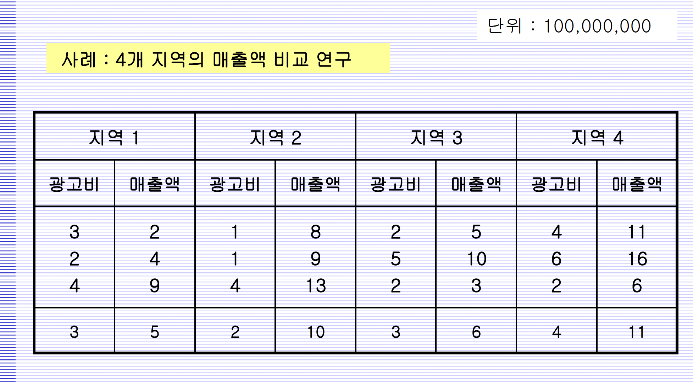

# 예제 데이터 입력
Adv=c(3,2,4,1,1,4,2,5,2,4,6,2)
Sales=c(2,4,9,8,9,13,5,10,3,11,16,6)
Area=factor(c(rep("D1",3),rep("D2",3),rep("D3",3),rep("D4",3)))ch26_ANCOVA
공분산분석 ANCOVA
ANCOVA vs ANOVA
공분산분석은 독립변수가 명목척도와 메트릭척도 모두를 갖는 경우에 사용한다.
이 때, 메트릭 척도인 독립변수는 통제해야하는 혼란 변수이며 명목 척도인 독립변수에 의한 효과 확인이 주 목적이다.
혼란변수인 메트릭 척도는 회귀분석으로 제거하고 나머지 잔차를 이용하여 평균을 비교하는 분산분석을 진행한다.
Important
단, 독립변수간 평행성의 가정을 만족해야 한다!
예제 - 지역간 매출액 비교 ANCOVA Analysis (Chapter 27)

제1종 SS와 제3종 SS
# 회귀모형 Sales ~ Area+Adv의 분산분석
model1=lm(Sales ~ Area+Adv)
anova(model1)Analysis of Variance Table
Response: Sales
Df Sum Sq Mean Sq F value Pr(>F)
Area 3 78.000 26.000 9.1835 0.0079973 **
Adv 1 96.182 96.182 33.9725 0.0006445 ***
Residuals 7 19.818 2.831
---
Signif. codes: 0 '***' 0.001 '**' 0.01 '*' 0.05 '.' 0.1 ' ' 1# 회귀모형 Sales ~ Adv+Area의 분산분석
model2=lm(Sales ~ Adv+Area)
anova(model2) # You got different results!Analysis of Variance Table
Response: Sales
Df Sum Sq Mean Sq F value Pr(>F)
Adv 1 85.750 85.750 30.288 0.0009032 ***
Area 3 88.432 29.477 10.412 0.0056600 **
Residuals 7 19.818 2.831
---
Signif. codes: 0 '***' 0.001 '**' 0.01 '*' 0.05 '.' 0.1 ' ' 1
Note
model1과 model2의 결과차이를 보면, 독립변수의 순서만 다를 뿐인데, Adv와 Area 독립변수의 통계적 유의성이 달라졌다. 이는 제1종 제곱합(제1종 SS, 순차제곱합)은 모형에 순차적으로 항을 추가하면서 SSE의 감소를 확인하여 SSR을 계산하기 때문에, 앞에 어떤 항이 있느냐에 따라 해당 항의 SSR은 영향을 받는다. 이로인해 F검정을 통한 통계적 유의성 역시 달라진다.
# 두 회귀모형의 회귀계수 비교 - 같음
model1$coeff; model2$coeff[c(1,3,4,5,2)] # Same coefficients(Intercept) AreaD2 AreaD3 AreaD4 Adv
-1.272727 7.090909 1.000000 3.909091 2.090909 (Intercept) AreaD2 AreaD3 AreaD4 Adv
-1.272727 7.090909 1.000000 3.909091 2.090909 통계적 유의성은 두 모델이 다르지만, 결과적으로 회귀모형은 같다.
Anova(lm(Sales ~ Area+Adv), type=3) # Type 3 SSAnova Table (Type III tests)
Response: Sales
Sum Sq Df F value Pr(>F)
(Intercept) 2.182 1 0.7706 0.4091360
Area 88.432 3 10.4117 0.0056600 **
Adv 96.182 1 33.9725 0.0006445 ***
Residuals 19.818 7
---
Signif. codes: 0 '***' 0.001 '**' 0.01 '*' 0.05 '.' 0.1 ' ' 1Anova(lm(Sales ~ Adv+Area), type=3) # You got same results!Anova Table (Type III tests)
Response: Sales
Sum Sq Df F value Pr(>F)
(Intercept) 2.182 1 0.7706 0.4091360
Adv 96.182 1 33.9725 0.0006445 ***
Area 88.432 3 10.4117 0.0056600 **
Residuals 19.818 7
---
Signif. codes: 0 '***' 0.001 '**' 0.01 '*' 0.05 '.' 0.1 ' ' 1
Note
제3종 SS를 사용하는 경우 순서와 관계없이 나머지 항이 모두 포함되어 있는 모형에 항을 추가하고, SSE의 감소를 보고 SSR을 계산한다. 때문에 항의 순서를 달리하더라도 각 항의 SSR이 변하지 않는다.
ANCOVA by lsmeans
lsmeans::lsmeans(model1, "Area", contr = "trt.vs.ctrlk") # Area 변수에 대해 조정된 평균(Least Squares Means)계산, contr인수는 대조군 비교방법 지정, "trt.vs.ctrlk"는 treatment그룹 과 control 그룹 간 비교를 의미한다.$lsmeans
Area lsmean SE df lower.CL upper.CL
D1 5.00 0.971 7 2.70 7.3
D2 12.09 1.036 7 9.64 14.5
D3 6.00 0.971 7 3.70 8.3
D4 8.91 1.036 7 6.46 11.4
Confidence level used: 0.95
$contrasts
contrast estimate SE df t.ratio p.value
D1 - D4 -3.91 1.42 7 -2.753 0.0709
D2 - D4 3.18 1.55 7 2.053 0.1863
D3 - D4 -2.91 1.42 7 -2.049 0.1874
P value adjustment: dunnettx method for 3 tests $lsmeans
이 부분에서는 각 Area 그룹의 Sales의 조정된 평균과 신뢰구간을 나타낸다.
Adv에 의한 Sales의 변동은 제외되었다.
$contrasts
각 Area 그룹간 차이를 보여준다.
p.value를 봤을 때 유의수준 5% 수준에서 모두 귀무가설을 기각하지 못하고 있기 때문에 Area 그룹간 차이는 없다고 봐야 한다.
평행성(Parallel) 확인
# 상호작용항이 포함된 회귀분석의 분산분석
model3=lm(Sales ~ Area*Adv)
anova(model3) Analysis of Variance Table
Response: Sales
Df Sum Sq Mean Sq F value Pr(>F)
Area 3 78.000 26.000 6.5000 0.051135 .
Adv 1 96.182 96.182 24.0455 0.008023 **
Area:Adv 3 3.818 1.273 0.3182 0.813027
Residuals 4 16.000 4.000
---
Signif. codes: 0 '***' 0.001 '**' 0.01 '*' 0.05 '.' 0.1 ' ' 1
Note
Area와 Adv의 상호작용을 고려한 회귀분석을 했을 때, 상호작용항의 통계적 유의성이 나타나지 않는다. 이를 통해 두 변수는 상호작용이 없는 평행성을 만족한다고 볼 수 있다.
Df Sum Sq Mean Sq F value Pr(>F)
Area:Adv 3 3.818 1.273 0.3182 0.813027 # 상호작용을 포함하지 않은 모델과 포함한 모델 간의 분산분석
anova(model1, model3) # Parrallel slope? Yes!Analysis of Variance Table
Model 1: Sales ~ Area + Adv
Model 2: Sales ~ Area * Adv
Res.Df RSS Df Sum of Sq F Pr(>F)
1 7 19.818
2 4 16.000 3 3.8182 0.3182 0.813
Note
결과를 보면 상호작용항이 포함되었을 때 RSS는 줄어들지만(19.818 -> 16) 그 정도가 약하여, F검정에서 귀무가설(두 모델의 평균은 같다)을 기각하지 못한다. 때문에 상호작용항은 통계적 유의성을 보이지 않고 있다.